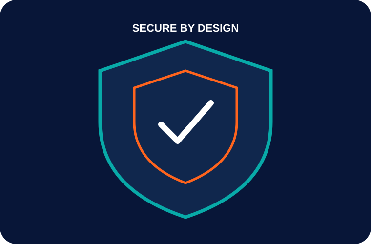

Security, quality, performance and maintainability are considered throughout the product lifecycle.

Role-based access, authentication flows, session handling and least-privilege thinking.
Validation, error handling, testing strategy and release checks built into delivery.
Environment separation, secrets handling, deployment controls, logging and monitoring.
Thoughtful data flows, boundaries, retention considerations and secure integrations.
Efficient interfaces, API behavior, caching and production observability.
Readable code, practical architecture, documentation and handover readiness.
Plan → build → review → test → release → monitor → improve.
For regulated or sensitive environments, we can discuss the required controls, hosting model, access policies, audit expectations and operational responsibilities during discovery.
Discuss requirements →